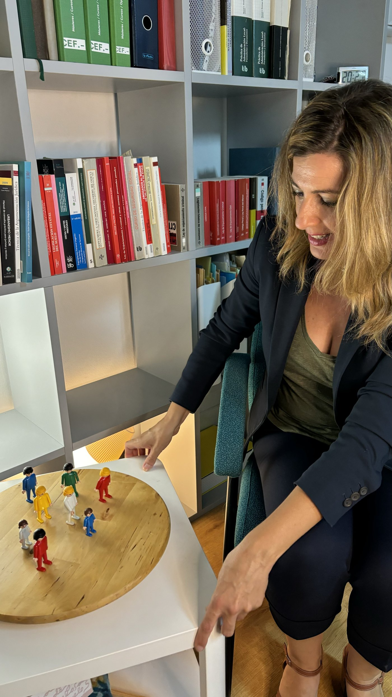
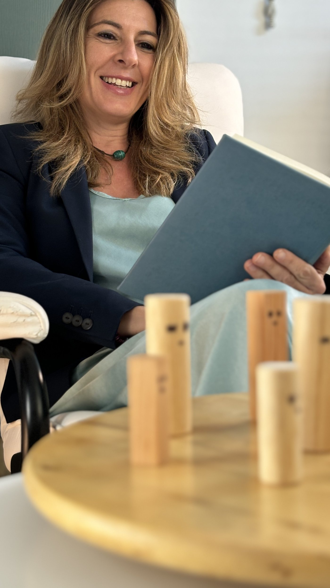

Un espacio de acompañamiento sistémico para observar con más amplitud situaciones, vínculos y dinámicas familiares que pueden estar influyendo en tu vida. Con respeto, sin juicios y sin buscar culpables.

No necesitas saber de antemano qué hay detrás de lo que te sucede. Partimos de aquello que hoy sientes que necesitas comprender.
Dificultades con la pareja, padres, hijos, hermanos u otras relaciones importantes que parecen llevarte una y otra vez al mismo lugar.
Una separación, una pérdida, una decisión importante o una etapa vital en la que sientes que necesitas más claridad para continuar.
Una sensación de bloqueo, una dificultad que no terminas de comprender o simplemente el deseo de observar tu historia desde una perspectiva más amplia.
"No se trata de encontrar culpables ni de decirte qué debes hacer. Se trata de crear un espacio desde el que puedas mirar tu situación con mayor amplitud."ANA BALLESTER
Cada formato ofrece una manera distinta de aproximarte a aquello que quieres mirar. Puedes elegir el que sientas más adecuado para ti en este momento.
Trabajamos sobre una cuestión concreta que en este momento sea importante para ti, explorándola desde una mirada sistémica y relacional.
En los talleres varias personas participan en procesos de constelaciones. Puedes trabajar una cuestión propia o participar como representante u observadora.
Me cuentas brevemente qué estás viviendo y qué te gustaría poder comprender.
Exploramos las relaciones y dinámicas vinculadas con aquello que te preocupa.
Sin buscar culpables, forzar interpretaciones ni imponer una dirección.
Cerramos recogiendo aquello que haya podido resultar significativo para ti.
Cada persona conserva siempre la libertad y la responsabilidad sobre sus decisiones y su propio proceso.
No buscamos quién hizo bien o mal las cosas, sino comprender qué está ocurriendo.
Cada historia familiar merece ser mirada con respeto, incluso cuando contiene situaciones difíciles.
No puedo saber de antemano qué aparecerá en una sesión ni qué significado tendrá para cada persona.
El acompañamiento no sustituye tu capacidad de decidir. Tu vida y tus elecciones siguen siendo tuyas.

Soy Ana Ballester García. Mi trayectoria profesional me ha permitido acompañar durante muchos años a personas y familias en momentos especialmente delicados de sus vidas.
Con el tiempo fui comprendiendo que detrás de muchos conflictos visibles existen también dimensiones familiares, relacionales y emocionales que necesitan ser miradas. Ese camino me llevó a formarme en la mirada sistémica y las constelaciones familiares.
Hoy facilito sesiones individuales y talleres grupales desde una manera de trabajar basada en la presencia, el respeto, la responsabilidad y la ausencia de juicio.
Una pequeña guía de reflexión personal. No busca darte respuestas, sino invitarte a observar. Puedes leerla despacio y quedarte con la pregunta que despierte algo en ti.
No. Puedes acudir aunque nunca hayas realizado una constelación ni conozcas previamente este enfoque.
Sí. Puedes participar como representante u observadora y vivir igualmente la experiencia del taller.
No puedo garantizarlo. Cada persona y cada proceso son diferentes. La sesión ofrece un espacio desde el que observar tu situación desde otra perspectiva.
No. Este acompañamiento es un espacio de desarrollo y exploración personal y no sustituye la atención psicológica, médica o sanitaria cuando esta sea necesaria.
Sí. Lo que ocurre en una sesión individual o en un taller se trata con total confidencialidad y respeto.
Ana también ejerce como abogada y mediadora familiar en Mediación Ballester.
Si hay una situación de tu vida que sientes que necesitas comprender de una manera diferente, puedes escribirme para valorar si una sesión individual o un taller grupal encaja con lo que estás buscando.
Valencia · Sesiones individuales · Talleres grupales